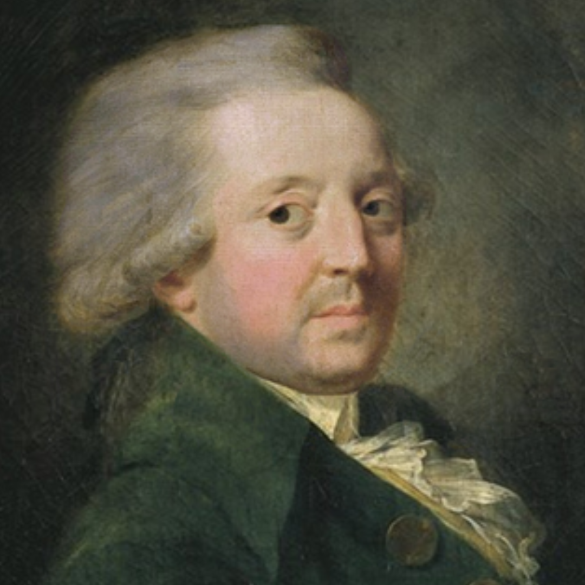

Born in 1743, Marie Jean Antoine Nicolas de Caritat, Marquis de Condorcet was born into an aristocratic family, he was well respected in mathematics and by the age of 26 became a member of the French academy of sciences, meaning he was a part of the most prestigious scientific institutions in France; full funding and influence.
In politics, his beliefs were… pretty forward thinking for the time; a supporter of abolishing slavery, an advocate for women's rights and universal education, Condorcet slowly built his way into politics, by 1789 when the French Revolution began, he was onboard France as a republic; equal rights and a new constitution, even arguing for sparing the previous king's life, what followed in the republic however were mass executions and paranoia.
During this time, Condorcet made the mistake of talking back about this new republic which led to an arrest warrant, he went into hiding in Paris where a woman called Madame Vernet risked her life to protect him and for nine long months he was stuck in his house, he feared for his life. It was during this time that Condorcet wrote a book; sketch for a historical picture of the progress of the human mind.
The book argued that humanity as it stands, even with the revolution that he witnessed is on an unstoppable trend trajectory; intelligence, morality and the capability of humanity were on the rise and would only continue to progress without a ceiling. From his point of view, Condorcet had witnessed a significant jump in science, technology and morality; the discovery of oxygen, electricity development, the steam engine, hot air balloons and of course, his own country's revolutions were significant advancements enough to encourage his writings.
His beliefs weren't based on religion or hope but rather, the progress that he had seen firsthand and the progress he knew would continue, immortality remained something that science would naturally deliver. He didn't argue that lifespan would just be extended but rather that there is no fixed biological point to how long humans can live because of developments in medicine and the idea that each generation would naturally outlive the last.
Unfortunately for Condorcet, after he fled his hiding spot in March 1794, he got caught immediately and was thrown into prison where he died two days later.
Although not solely focused on the aspect of immortality throughout his whole life, he was one of the first serious thinkers outside of the lens of mythology. As a mathematician, Condorcet gave a grounded take on a subject which at the time primarily had religious connotations.